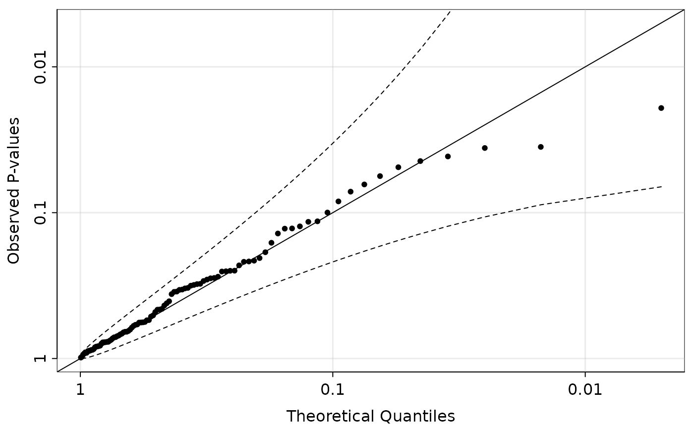

Estimates and tests for either equilibrium or random mating across many loci
using hwelike(), hweustat(),
rmlike(), hwenodr(), or hweboot().
hwefit(
nmat,
type = c("ustat", "mle", "rm", "nodr", "boot"),
effdf = TRUE,
thresh = 3,
nboot = 2000,
verbose = TRUE
)A matrix of counts. The rows index the loci and the columns
index the genotypes. So nmat[i, j] is the number of individuals
that have genotype j-1 at locus i. The ploidy is
assumed to be ncol(nmat)-1.
The method to use:
"ustat"U-statistic approach to test for equilibrium and
estimate double reduction rates given equilibrium. The default.
See hweustat().
"mle"Maximum likelihood estimation and testing. Only
supported for ploidies less than or equal to 10.
See hwelike().
"rm"Testing random mating, and estimating gamete
frequencies given random mating. See rmlike().
"nodr"Testing equilibrium given no double reduction.
See hwenodr().
"boot"Bootstrap approach to test for equilibrium.
See hweboot().
A logical. Should we use the effective degrees of freedom?
Only applicable if type = "mle" or type = "ustat".
A non-negative numeric. The threshold for aggregating
genotypes. Only applicable if type = "mle",
type = "ustat", or type = "rm".
The number of bootstrap iterations to use if
type = "boot".
Should we print more (TRUE) or less (FALSE)?
A data frame. The columns of which can are described in
hwelike(), hweustat(),
rmlike(), or hwenodr().
We provide parallelization support through the future package.
## Generate random data
set.seed(5)
ploidy <- 4
nloc <- 100
size <- 1000
r <- 0.25
alpha <- 1/12
qvec <- hwefreq(r = r, alpha = alpha, ploidy = ploidy)
nmat <- t(rmultinom(n = nloc, size = size, prob = qvec))
## Run the analysis in parallel on the local computer with two workers
future::plan(future::multisession, workers = 2)
hout <- hwefit(nmat = nmat, type = "ustat")
#> Using 2 worker(s) to run hwefit() on 100 loci...
#> Done!
#> Don't forget to shut down your workers with:
#> future::plan(future::sequential)
## Shut down parallel workers
future::plan("sequential")
## Show that p-values are uniform
## QQ-plot on -log10 scale
qqpvalue(pvals = hout$p_hwe, method = "base")

## Kolmogorov-Smirnov Test
stats::ks.test(hout$p_hwe, "qunif")
#>
#> Asymptotic one-sample Kolmogorov-Smirnov test
#>
#> data: hout$p_hwe
#> D = 0.080917, p-value = 0.5293
#> alternative hypothesis: two-sided
#>
## Can control for Type I error
mean(hout$p_hwe < 0.05)
#> [1] 0.06
## Consistent estimate for alpha
alpha
#> [1] 0.08333333
mean(hout$alpha1)
#> [1] 0.08281443